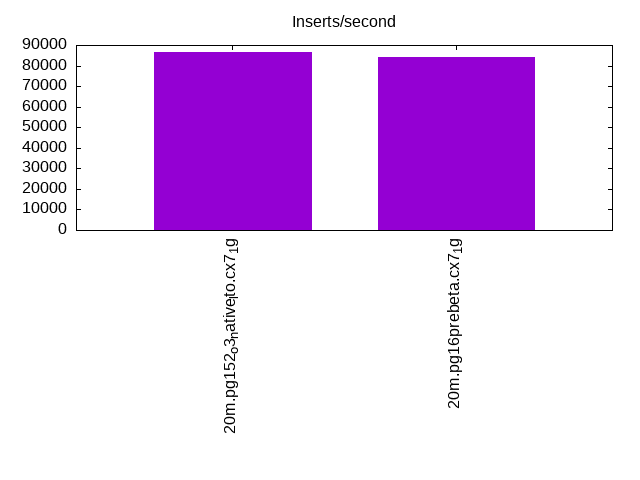
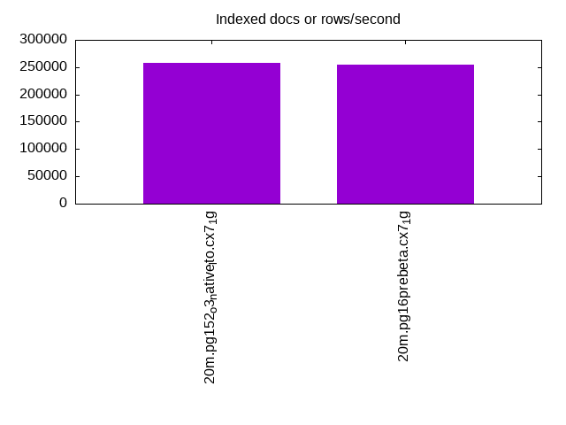
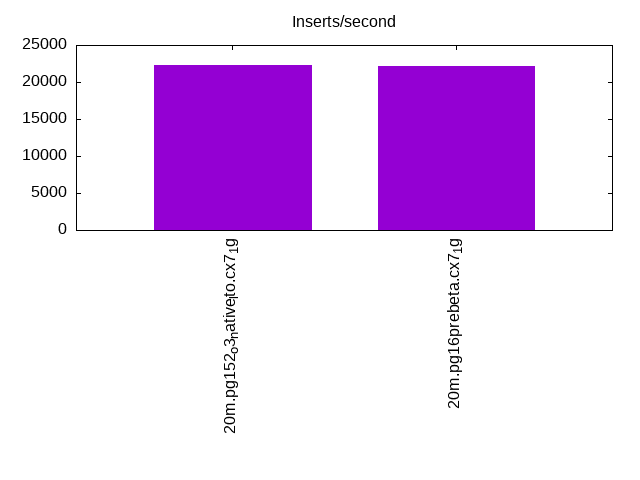
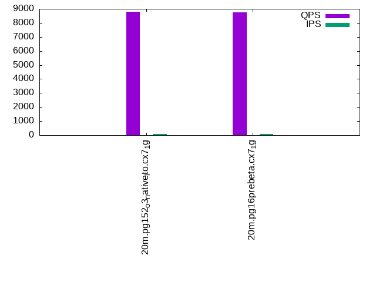
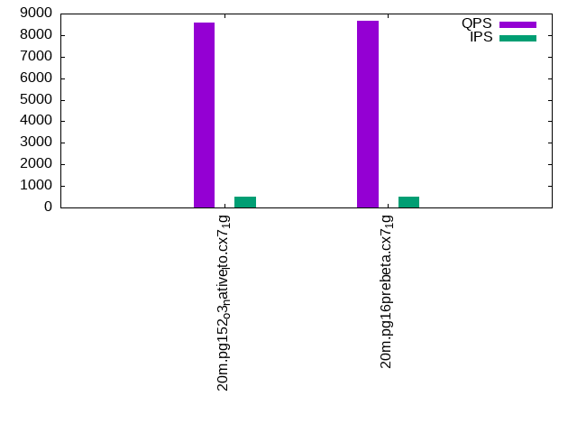
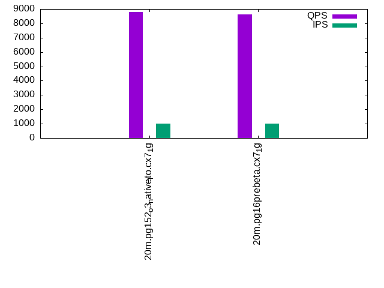

This is a report for the insert benchmark with 20M docs and 1 client(s). It is generated by scripts (bash, awk, sed) and Tufte might not be impressed. An overview of the insert benchmark is here and a short update is here. Below, by DBMS, I mean DBMS+version.config. An example is my8020.c10b40 where my means MySQL, 8020 is version 8.0.20 and c10b40 is the name for the configuration file.
The test server has 8 AMD cores, 16G RAM and an NVMe SSD. It is described here as the Beelink. The benchmark was run with 1 client and there were 1 or 2 connections per client (1 for queries, 1 for inserts). It uses 1 table. It loads 20M rows without secondary indexes, creates secondary indexes, loads another 20M rows then does 3 read+write tests for one hour each that do queries as fast as possible with 100, 500 and then 1000 writes/second/client concurrent with the queries. The database is cached by OS but not by Postgres. Clients and the DBMS share one server. The per-database configs are in the per-database subdirectories here.
The tested DBMS are:
The numbers are inserts/s for l.i0 and l.i1, indexed docs (or rows) /s for l.x and queries/s for q*.2. The values are the average rate over the entire test for inserts (IPS) and queries (QPS). The range of values for IPS and QPS is split into 3 parts: bottom 25%, middle 50%, top 25%. Values in the bottom 25% have a red background, values in the top 25% have a green background and values in the middle have no color. A gray background is used for values that can be ignored because the DBMS did not sustain the target insert rate. Red backgrounds are not used when the minimum value is within 80% of the max value.
| dbms | l.i0 | l.x | l.i1 | q100.1 | q500.1 | q1000.1 |
|---|---|---|---|---|---|---|
| 20m.pg152_o3_native_lto.cx7_1g | 86580 | 257692 | 22296 | 8791 | 8598 | 8802 |
| 20m.pg16prebeta.cx7_1g | 84388 | 254430 | 22173 | 8750 | 8659 | 8642 |
This table has relative throughput, throughput for the DBMS relative to the DBMS in the first line, using the absolute throughput from the previous table.
| dbms | l.i0 | l.x | l.i1 | q100.1 | q500.1 | q1000.1 |
|---|---|---|---|---|---|---|
| 20m.pg152_o3_native_lto.cx7_1g | 1.00 | 1.00 | 1.00 | 1.00 | 1.00 | 1.00 |
| 20m.pg16prebeta.cx7_1g | 0.97 | 0.99 | 0.99 | 1.00 | 1.01 | 0.98 |
This lists the average rate of inserts/s for the tests that do inserts concurrent with queries. For such tests the query rate is listed in the table above. The read+write tests are setup so that the insert rate should match the target rate every second. Cells that are not at least 95% of the target have a red background to indicate a failure to satisfy the target.
| dbms | q100.1 | q500.1 | q1000.1 |
|---|---|---|---|
| pg152_o3_native_lto.cx7_1g | 100 | 499 | 998 |
| pg16prebeta.cx7_1g | 100 | 499 | 998 |
| target | 100 | 500 | 1000 |
l.i0: load without secondary indexes. Graphs for performance per 1-second interval are here.
Average throughput:
Insert response time histogram: each cell has the percentage of responses that take <= the time in the header and max is the max response time in seconds. For the max column values in the top 25% of the range have a red background and in the bottom 25% of the range have a green background. The red background is not used when the min value is within 80% of the max value.
| dbms | 256us | 1ms | 4ms | 16ms | 64ms | 256ms | 1s | 4s | 16s | gt | max |
|---|---|---|---|---|---|---|---|---|---|---|---|
| pg152_o3_native_lto.cx7_1g | 0.255 | 99.744 | 0.001 | 0.010 | |||||||
| pg16prebeta.cx7_1g | 99.998 | 0.002 | 0.006 |
Performance metrics for the DBMS listed above. Some are normalized by throughput, others are not. Legend for results is here.
ips qps rps rmbps wps wmbps rpq rkbpq wpi wkbpi csps cpups cspq cpupq dbgb1 dbgb2 rss maxop p50 p99 tag 86580 0 0 0.0 168.9 41.1 0.000 0.000 0.002 0.486 10454 22.6 0.121 21 1.9 5.2 0.0 0.010 86981 76160 20m.pg152_o3_native_lto.cx7_1g 84388 0 0 0.0 176.8 39.9 0.000 0.000 0.002 0.484 10246 23.7 0.121 22 1.9 5.2 0.0 0.006 84308 74218 20m.pg16prebeta.cx7_1g
l.x: create secondary indexes.
Average throughput:
Performance metrics for the DBMS listed above. Some are normalized by throughput, others are not. Legend for results is here.
ips qps rps rmbps wps wmbps rpq rkbpq wpi wkbpi csps cpups cspq cpupq dbgb1 dbgb2 rss maxop p50 p99 tag 257692 0 0 0.0 152.6 54.0 0.000 0.000 0.001 0.214 738 11.9 0.003 4 3.7 8.6 0.0 0.003 NA NA 20m.pg152_o3_native_lto.cx7_1g 254430 0 0 0.0 128.9 48.2 0.000 0.000 0.001 0.194 813 12.6 0.003 4 3.7 8.6 0.0 0.003 NA NA 20m.pg16prebeta.cx7_1g
l.i1: continue load after secondary indexes created. Graphs for performance per 1-second interval are here.
Average throughput:
Insert response time histogram: each cell has the percentage of responses that take <= the time in the header and max is the max response time in seconds. For the max column values in the top 25% of the range have a red background and in the bottom 25% of the range have a green background. The red background is not used when the min value is within 80% of the max value.
| dbms | 256us | 1ms | 4ms | 16ms | 64ms | 256ms | 1s | 4s | 16s | gt | max |
|---|---|---|---|---|---|---|---|---|---|---|---|
| pg152_o3_native_lto.cx7_1g | 99.989 | 0.011 | nonzero | 0.019 | |||||||
| pg16prebeta.cx7_1g | 99.984 | 0.015 | 0.001 | 0.059 |
Performance metrics for the DBMS listed above. Some are normalized by throughput, others are not. Legend for results is here.
ips qps rps rmbps wps wmbps rpq rkbpq wpi wkbpi csps cpups cspq cpupq dbgb1 dbgb2 rss maxop p50 p99 tag 22296 0 70 0.5 23146.9 277.8 0.003 0.022 1.038 12.757 7271 20.1 0.326 72 8.2 18.3 0.0 0.019 22575 17679 20m.pg152_o3_native_lto.cx7_1g 22173 0 80 0.6 23163.6 274.7 0.004 0.027 1.045 12.684 7212 20.1 0.325 73 8.2 17.5 0.0 0.059 22481 17477 20m.pg16prebeta.cx7_1g
q100.1: range queries with 100 insert/s per client. Graphs for performance per 1-second interval are here.
Average throughput:
Query response time histogram: each cell has the percentage of responses that take <= the time in the header and max is the max response time in seconds. For max values in the top 25% of the range have a red background and in the bottom 25% of the range have a green background. The red background is not used when the min value is within 80% of the max value.
| dbms | 256us | 1ms | 4ms | 16ms | 64ms | 256ms | 1s | 4s | 16s | gt | max |
|---|---|---|---|---|---|---|---|---|---|---|---|
| pg152_o3_native_lto.cx7_1g | 99.948 | 0.051 | 0.001 | nonzero | 0.010 | ||||||
| pg16prebeta.cx7_1g | 99.957 | 0.042 | 0.001 | nonzero | 0.010 |
Insert response time histogram: each cell has the percentage of responses that take <= the time in the header and max is the max response time in seconds. For max values in the top 25% of the range have a red background and in the bottom 25% of the range have a green background. The red background is not used when the min value is within 80% of the max value.
| dbms | 256us | 1ms | 4ms | 16ms | 64ms | 256ms | 1s | 4s | 16s | gt | max |
|---|---|---|---|---|---|---|---|---|---|---|---|
| pg152_o3_native_lto.cx7_1g | 99.889 | 0.111 | 0.012 | ||||||||
| pg16prebeta.cx7_1g | 99.750 | 0.250 | 0.012 |
Performance metrics for the DBMS listed above. Some are normalized by throughput, others are not. Legend for results is here.
ips qps rps rmbps wps wmbps rpq rkbpq wpi wkbpi csps cpups cspq cpupq dbgb1 dbgb2 rss maxop p50 p99 tag 100 8791 2 0.0 402.4 5.1 0.000 0.001 4.036 52.224 33750 13.1 3.839 119 8.2 16.4 0.0 0.010 8517 8389 20m.pg152_o3_native_lto.cx7_1g 100 8750 1 0.0 357.3 4.4 0.000 0.001 3.584 45.263 33582 13.3 3.838 122 8.2 15.9 0.0 0.010 8421 8149 20m.pg16prebeta.cx7_1g
q500.1: range queries with 500 insert/s per client. Graphs for performance per 1-second interval are here.
Average throughput:
Query response time histogram: each cell has the percentage of responses that take <= the time in the header and max is the max response time in seconds. For max values in the top 25% of the range have a red background and in the bottom 25% of the range have a green background. The red background is not used when the min value is within 80% of the max value.
| dbms | 256us | 1ms | 4ms | 16ms | 64ms | 256ms | 1s | 4s | 16s | gt | max |
|---|---|---|---|---|---|---|---|---|---|---|---|
| pg152_o3_native_lto.cx7_1g | 99.972 | 0.028 | nonzero | nonzero | 0.004 | ||||||
| pg16prebeta.cx7_1g | 99.967 | 0.033 | nonzero | nonzero | 0.006 |
Insert response time histogram: each cell has the percentage of responses that take <= the time in the header and max is the max response time in seconds. For max values in the top 25% of the range have a red background and in the bottom 25% of the range have a green background. The red background is not used when the min value is within 80% of the max value.
| dbms | 256us | 1ms | 4ms | 16ms | 64ms | 256ms | 1s | 4s | 16s | gt | max |
|---|---|---|---|---|---|---|---|---|---|---|---|
| pg152_o3_native_lto.cx7_1g | 99.783 | 0.217 | 0.012 | ||||||||
| pg16prebeta.cx7_1g | 99.767 | 0.233 | 0.012 |
Performance metrics for the DBMS listed above. Some are normalized by throughput, others are not. Legend for results is here.
ips qps rps rmbps wps wmbps rpq rkbpq wpi wkbpi csps cpups cspq cpupq dbgb1 dbgb2 rss maxop p50 p99 tag 499 8598 10 0.1 1367.0 16.7 0.001 0.009 2.740 34.343 33131 13.9 3.853 129 8.4 13.9 0.0 0.004 8294 8213 20m.pg152_o3_native_lto.cx7_1g 499 8659 11 0.1 1368.0 16.8 0.001 0.009 2.741 34.415 33351 13.8 3.852 127 8.4 13.8 0.0 0.006 8309 8196 20m.pg16prebeta.cx7_1g
q1000.1: range queries with 1000 insert/s per client. Graphs for performance per 1-second interval are here.
Average throughput:
Query response time histogram: each cell has the percentage of responses that take <= the time in the header and max is the max response time in seconds. For max values in the top 25% of the range have a red background and in the bottom 25% of the range have a green background. The red background is not used when the min value is within 80% of the max value.
| dbms | 256us | 1ms | 4ms | 16ms | 64ms | 256ms | 1s | 4s | 16s | gt | max |
|---|---|---|---|---|---|---|---|---|---|---|---|
| pg152_o3_native_lto.cx7_1g | 99.973 | 0.027 | nonzero | nonzero | 0.010 | ||||||
| pg16prebeta.cx7_1g | 99.970 | 0.030 | nonzero | nonzero | 0.004 |
Insert response time histogram: each cell has the percentage of responses that take <= the time in the header and max is the max response time in seconds. For max values in the top 25% of the range have a red background and in the bottom 25% of the range have a green background. The red background is not used when the min value is within 80% of the max value.
| dbms | 256us | 1ms | 4ms | 16ms | 64ms | 256ms | 1s | 4s | 16s | gt | max |
|---|---|---|---|---|---|---|---|---|---|---|---|
| pg152_o3_native_lto.cx7_1g | 99.483 | 0.517 | 0.012 | ||||||||
| pg16prebeta.cx7_1g | 99.483 | 0.517 | 0.012 |
Performance metrics for the DBMS listed above. Some are normalized by throughput, others are not. Legend for results is here.
ips qps rps rmbps wps wmbps rpq rkbpq wpi wkbpi csps cpups cspq cpupq dbgb1 dbgb2 rss maxop p50 p99 tag 998 8802 3 0.0 2659.5 29.2 0.000 0.002 2.664 29.977 34078 14.2 3.872 129 9.0 14.2 0.0 0.010 8422 8309 20m.pg152_o3_native_lto.cx7_1g 998 8642 2 0.0 2655.1 29.2 0.000 0.001 2.660 29.965 33467 14.2 3.873 131 9.0 14.1 0.0 0.004 8247 8101 20m.pg16prebeta.cx7_1g
l.i0: load without secondary indexes
Performance metrics for all DBMS, not just the ones listed above. Some are normalized by throughput, others are not. Legend for results is here.
ips qps rps rmbps wps wmbps rpq rkbpq wpi wkbpi csps cpups cspq cpupq dbgb1 dbgb2 rss maxop p50 p99 tag 86580 0 0 0.0 168.9 41.1 0.000 0.000 0.002 0.486 10454 22.6 0.121 21 1.9 5.2 0.0 0.010 86981 76160 20m.pg152_o3_native_lto.cx7_1g 84388 0 0 0.0 176.8 39.9 0.000 0.000 0.002 0.484 10246 23.7 0.121 22 1.9 5.2 0.0 0.006 84308 74218 20m.pg16prebeta.cx7_1g
l.x: create secondary indexes
Performance metrics for all DBMS, not just the ones listed above. Some are normalized by throughput, others are not. Legend for results is here.
ips qps rps rmbps wps wmbps rpq rkbpq wpi wkbpi csps cpups cspq cpupq dbgb1 dbgb2 rss maxop p50 p99 tag 257692 0 0 0.0 152.6 54.0 0.000 0.000 0.001 0.214 738 11.9 0.003 4 3.7 8.6 0.0 0.003 NA NA 20m.pg152_o3_native_lto.cx7_1g 254430 0 0 0.0 128.9 48.2 0.000 0.000 0.001 0.194 813 12.6 0.003 4 3.7 8.6 0.0 0.003 NA NA 20m.pg16prebeta.cx7_1g
l.i1: continue load after secondary indexes created
Performance metrics for all DBMS, not just the ones listed above. Some are normalized by throughput, others are not. Legend for results is here.
ips qps rps rmbps wps wmbps rpq rkbpq wpi wkbpi csps cpups cspq cpupq dbgb1 dbgb2 rss maxop p50 p99 tag 22296 0 70 0.5 23146.9 277.8 0.003 0.022 1.038 12.757 7271 20.1 0.326 72 8.2 18.3 0.0 0.019 22575 17679 20m.pg152_o3_native_lto.cx7_1g 22173 0 80 0.6 23163.6 274.7 0.004 0.027 1.045 12.684 7212 20.1 0.325 73 8.2 17.5 0.0 0.059 22481 17477 20m.pg16prebeta.cx7_1g
q100.1: range queries with 100 insert/s per client
Performance metrics for all DBMS, not just the ones listed above. Some are normalized by throughput, others are not. Legend for results is here.
ips qps rps rmbps wps wmbps rpq rkbpq wpi wkbpi csps cpups cspq cpupq dbgb1 dbgb2 rss maxop p50 p99 tag 100 8791 2 0.0 402.4 5.1 0.000 0.001 4.036 52.224 33750 13.1 3.839 119 8.2 16.4 0.0 0.010 8517 8389 20m.pg152_o3_native_lto.cx7_1g 100 8750 1 0.0 357.3 4.4 0.000 0.001 3.584 45.263 33582 13.3 3.838 122 8.2 15.9 0.0 0.010 8421 8149 20m.pg16prebeta.cx7_1g
q500.1: range queries with 500 insert/s per client
Performance metrics for all DBMS, not just the ones listed above. Some are normalized by throughput, others are not. Legend for results is here.
ips qps rps rmbps wps wmbps rpq rkbpq wpi wkbpi csps cpups cspq cpupq dbgb1 dbgb2 rss maxop p50 p99 tag 499 8598 10 0.1 1367.0 16.7 0.001 0.009 2.740 34.343 33131 13.9 3.853 129 8.4 13.9 0.0 0.004 8294 8213 20m.pg152_o3_native_lto.cx7_1g 499 8659 11 0.1 1368.0 16.8 0.001 0.009 2.741 34.415 33351 13.8 3.852 127 8.4 13.8 0.0 0.006 8309 8196 20m.pg16prebeta.cx7_1g
q1000.1: range queries with 1000 insert/s per client
Performance metrics for all DBMS, not just the ones listed above. Some are normalized by throughput, others are not. Legend for results is here.
ips qps rps rmbps wps wmbps rpq rkbpq wpi wkbpi csps cpups cspq cpupq dbgb1 dbgb2 rss maxop p50 p99 tag 998 8802 3 0.0 2659.5 29.2 0.000 0.002 2.664 29.977 34078 14.2 3.872 129 9.0 14.2 0.0 0.010 8422 8309 20m.pg152_o3_native_lto.cx7_1g 998 8642 2 0.0 2655.1 29.2 0.000 0.001 2.660 29.965 33467 14.2 3.873 131 9.0 14.1 0.0 0.004 8247 8101 20m.pg16prebeta.cx7_1g
Insert response time histogram
256us 1ms 4ms 16ms 64ms 256ms 1s 4s 16s gt max tag 0.000 0.255 99.744 0.001 0.000 0.000 0.000 0.000 0.000 0.000 0.010 pg152_o3_native_lto.cx7_1g 0.000 0.000 99.998 0.002 0.000 0.000 0.000 0.000 0.000 0.000 0.006 pg16prebeta.cx7_1g
TODO - determine whether there is data for create index response time
Insert response time histogram
256us 1ms 4ms 16ms 64ms 256ms 1s 4s 16s gt max tag 0.000 0.000 99.989 0.011 nonzero 0.000 0.000 0.000 0.000 0.000 0.019 pg152_o3_native_lto.cx7_1g 0.000 0.000 99.984 0.015 0.001 0.000 0.000 0.000 0.000 0.000 0.059 pg16prebeta.cx7_1g
Query response time histogram
256us 1ms 4ms 16ms 64ms 256ms 1s 4s 16s gt max tag 99.948 0.051 0.001 nonzero 0.000 0.000 0.000 0.000 0.000 0.000 0.010 pg152_o3_native_lto.cx7_1g 99.957 0.042 0.001 nonzero 0.000 0.000 0.000 0.000 0.000 0.000 0.010 pg16prebeta.cx7_1g
Insert response time histogram
256us 1ms 4ms 16ms 64ms 256ms 1s 4s 16s gt max tag 0.000 0.000 99.889 0.111 0.000 0.000 0.000 0.000 0.000 0.000 0.012 pg152_o3_native_lto.cx7_1g 0.000 0.000 99.750 0.250 0.000 0.000 0.000 0.000 0.000 0.000 0.012 pg16prebeta.cx7_1g
Query response time histogram
256us 1ms 4ms 16ms 64ms 256ms 1s 4s 16s gt max tag 99.972 0.028 nonzero nonzero 0.000 0.000 0.000 0.000 0.000 0.000 0.004 pg152_o3_native_lto.cx7_1g 99.967 0.033 nonzero nonzero 0.000 0.000 0.000 0.000 0.000 0.000 0.006 pg16prebeta.cx7_1g
Insert response time histogram
256us 1ms 4ms 16ms 64ms 256ms 1s 4s 16s gt max tag 0.000 0.000 99.783 0.217 0.000 0.000 0.000 0.000 0.000 0.000 0.012 pg152_o3_native_lto.cx7_1g 0.000 0.000 99.767 0.233 0.000 0.000 0.000 0.000 0.000 0.000 0.012 pg16prebeta.cx7_1g
Query response time histogram
256us 1ms 4ms 16ms 64ms 256ms 1s 4s 16s gt max tag 99.973 0.027 nonzero nonzero 0.000 0.000 0.000 0.000 0.000 0.000 0.010 pg152_o3_native_lto.cx7_1g 99.970 0.030 nonzero nonzero 0.000 0.000 0.000 0.000 0.000 0.000 0.004 pg16prebeta.cx7_1g
Insert response time histogram
256us 1ms 4ms 16ms 64ms 256ms 1s 4s 16s gt max tag 0.000 0.000 99.483 0.517 0.000 0.000 0.000 0.000 0.000 0.000 0.012 pg152_o3_native_lto.cx7_1g 0.000 0.000 99.483 0.517 0.000 0.000 0.000 0.000 0.000 0.000 0.012 pg16prebeta.cx7_1g